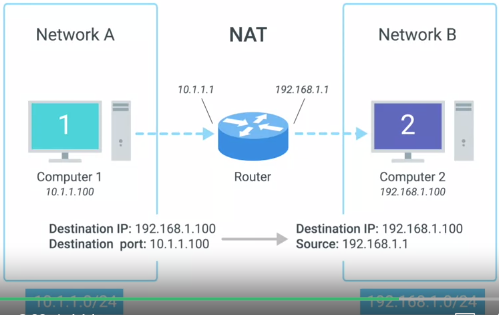
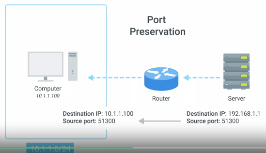
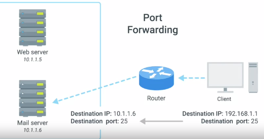
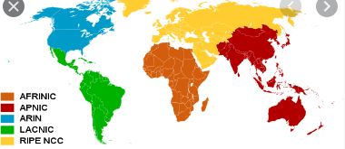

Index
NAT
Network Address TransalationAllows a gateway, router, firewall, to rewrite the source IP of an outgoing IP datagram while retaining the original IP in order to rewrite it into the response.

Soo basically the NAT hides the IP of Computer 1 from Computer 2, even while able to send data from computer 2 to 1 for a response
IP masquerading
This /|\ above mentioned is a ONE to MANY NAT.
NAT AND TRANSPORT LAYER:
Port Preservation :
A technique where the source port chosen by a client is the same port used by the router.

Port Forwarding :
A technique where specific destination ports can be configured to always be delivered to specific nodes.

REGIONAL INTERNET REGISTRY
